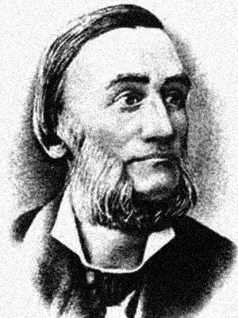

ЛЕОНІД ГЛІБОВ
(1827 — 1893)
…Леонід Іванович Глібов народився 5 березня 1827р. у селі Веселий Поділ Хорольського повіту на Полтавщині в родині управителя маєтків магнатів Родзянків. Початкову освіту він здобув дома за допомогою матері, а 1840р. вступив до Полтавської гімназії, де почав писати вірші і де виходить його перша збірка російською мовою "Стихотворения Леонида Глебова" (1847). До жанру байки Глібов звертається під час навчання у Ніжинському ліцеї вищих наук, тоді ж деякі з них друкує у газеті "Черниговские губернские ведомости". Після закінчення ліцею (1855) Глібов працює вчителем історії та географії в Чорному Острові на Поділлі, а з 1858р. — у Чернігівській чоловічій гімназії, гаряче захищає прогресивні педагогічні методи. Навколо сім'ї Глібова групується чернігівська інтелігенція. 1861р. письменник стає видавцем і редактором новоствореної газети "Черниговский листок". На сторінках цього тижневика часто з'являлися соціально гострі, спрямовані проти місцевих урядовців, поміщиків-деспотів, проти зловживань судових органів, матеріали. За зв'язки з членом підпільної організації "Земля і воля" І. Андрущенком у 1863р. Глібова було позбавлено права вчителювати, встановлено над ним поліцейський нагляд. Два роки поет живе у Ніжині, а 1865р. повертається у Чернігів і деякий час працює дрібним чиновником у канцелярії губернатора. З 1867р. він стає управителем земської друкарні, продовжує активну творчу працю, готує збірки своїх байок, видає книги-"метелики", друкує фейлетони, театральні огляди, публіцистичні статті, поезії російською мовою, твори для дітей. Помер Л. Глібов 10 листопада 1893р. в Чернігові, де його й поховано. Широке визнання в українській літературі Глібов здобув як байкар. Усього він написав понад сотню творів цього жанру. Перша збірка "Байки Леоніда Глібова", що містила 36 творів, вийшла у Києві 1863р., але майже весь тираж її був знищений у зв'язку з валуєвським циркуляром. У 1872р. вдалося видати другу, доповнену в порівнянні з першою, книгу байок, а 1882р.—третю, що була передруком попередньої. Спроби надрукувати інші збірки Глібову не вдалися — перешкоджали цензурні заборони. Видання всього творчого доробку письменника-класика стало можливим за часів Радянської влади. Історія української літератури другої половини ХІХ століття, Київ, 1979.